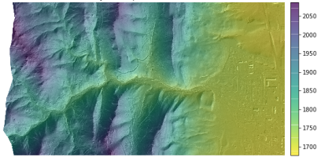
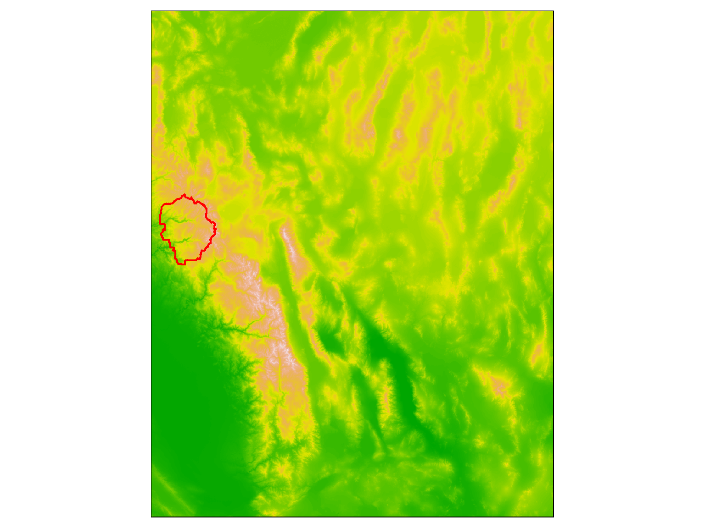
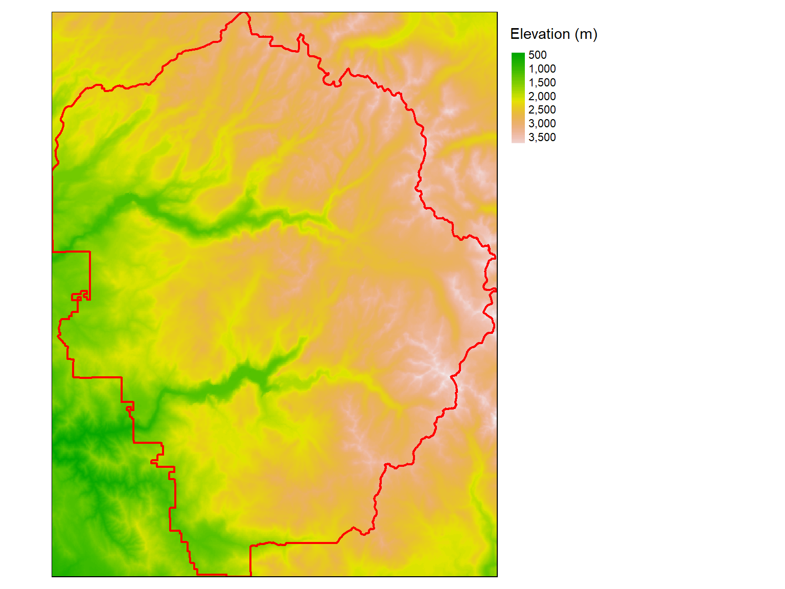

Importing and Plotting Raster Data

raster packageThe raster package is your go-to package to:
For details see the vignette: Introduction to the ‘raster’ package
The successor to the raster package is the terra package (also by Robert Hijmans).
RasterLayer - a single layer raster
RasterStack - multi-layer raster
RasterBrick - multi-layer raster (from a single file on disk, faster)
The sp package also has SpatialGrid and SpatialPixel classes. These can be easily converted to Raster* objects using the raster() or as() functions.
By default, the raster package will use import functions from rgdal if it’s installed. That means it can install any file format supported by rgdal.
To see all the raster file formats supported by rgdal (and therefore raster), run gdalDrivers().
## name long_name create copy isRaster
## 1 AAIGrid Arc/Info ASCII Grid FALSE TRUE TRUE
## 2 ACE2 ACE2 FALSE FALSE TRUE
## 3 ADRG ARC Digitized Raster Graphics TRUE FALSE TRUE
## 4 AIG Arc/Info Binary Grid FALSE FALSE TRUE
## 5 AirSAR AirSAR Polarimetric Image FALSE FALSE TRUE
## 6 ARG Azavea Raster Grid format FALSE TRUE TRUE
## 7 BAG Bathymetry Attributed Grid TRUE TRUE TRUE
## 8 BIGGIF Graphics Interchange Format (.gif) FALSE FALSE TRUE
## 9 BLX Magellan topo (.blx) FALSE TRUE TRUE
## 10 BMP MS Windows Device Independent Bitmap TRUE FALSE TRUE
## 11 BSB Maptech BSB Nautical Charts FALSE FALSE TRUE
## 12 BT VTP .bt (Binary Terrain) 1.3 Format TRUE FALSE TRUE
## 13 BYN Natural Resources Canada's Geoid TRUE FALSE TRUE
## 14 CAD AutoCAD Driver FALSE FALSE TRUE
## 15 CALS CALS (Type 1) FALSE TRUE TRUE
## 16 CEOS CEOS Image FALSE FALSE TRUE
## 17 COASP DRDC COASP SAR Processor Raster FALSE FALSE TRUE
## 18 COG Cloud optimized GeoTIFF generator FALSE TRUE TRUE
## 19 COSAR COSAR Annotated Binary Matrix (TerraSAR-X) FALSE FALSE TRUE
## 20 CPG Convair PolGASP FALSE FALSE TRUE
## 21 CTable2 CTable2 Datum Grid Shift TRUE FALSE TRUE
## 22 CTG USGS LULC Composite Theme Grid FALSE FALSE TRUE
## 23 DAAS Airbus DS Intelligence Data As A Service driver FALSE FALSE TRUE
## 24 DERIVED Derived datasets using VRT pixel functions FALSE FALSE TRUE
## 25 DIMAP SPOT DIMAP FALSE FALSE TRUE
## 26 DIPEx DIPEx FALSE FALSE TRUE
## 27 DOQ1 USGS DOQ (Old Style) FALSE FALSE TRUE
## 28 DOQ2 USGS DOQ (New Style) FALSE FALSE TRUE
## 29 DTED DTED Elevation Raster FALSE TRUE TRUE
## 30 E00GRID Arc/Info Export E00 GRID FALSE FALSE TRUE
## 31 ECRGTOC ECRG TOC format FALSE FALSE TRUE
## 32 EEDAI Earth Engine Data API Image FALSE FALSE TRUE
## 33 EHdr ESRI .hdr Labelled TRUE TRUE TRUE
## 34 EIR Erdas Imagine Raw FALSE FALSE TRUE
## 35 ELAS ELAS TRUE FALSE TRUE
## 36 ENVI ENVI .hdr Labelled TRUE FALSE TRUE
## 37 ERS ERMapper .ers Labelled TRUE FALSE TRUE
## 38 ESAT Envisat Image Format FALSE FALSE TRUE
## 39 ESRIC Esri Compact Cache FALSE FALSE TRUE
## 40 FAST EOSAT FAST Format FALSE FALSE TRUE
## 41 FIT FIT Image FALSE TRUE TRUE
## 42 FITS Flexible Image Transport System TRUE FALSE TRUE
## 43 FujiBAS Fuji BAS Scanner Image FALSE FALSE TRUE
## 44 GenBin Generic Binary (.hdr Labelled) FALSE FALSE TRUE
## 45 GFF Ground-based SAR Applications Testbed File Format (.gff) FALSE FALSE TRUE
## 46 GIF Graphics Interchange Format (.gif) FALSE TRUE TRUE
## 47 GMT GMT NetCDF Grid Format FALSE TRUE TRUE
## 48 GPKG GeoPackage TRUE TRUE TRUE
## 49 GRASSASCIIGrid GRASS ASCII Grid FALSE FALSE TRUE
## 50 GRIB GRIdded Binary (.grb, .grb2) FALSE TRUE TRUE
## 51 GS7BG Golden Software 7 Binary Grid (.grd) TRUE TRUE TRUE
## 52 GSAG Golden Software ASCII Grid (.grd) FALSE TRUE TRUE
## 53 GSBG Golden Software Binary Grid (.grd) TRUE TRUE TRUE
## 54 GSC GSC Geogrid FALSE FALSE TRUE
## 55 GTiff GeoTIFF TRUE TRUE TRUE
## 56 GTX NOAA Vertical Datum .GTX TRUE FALSE TRUE
## 57 GXF GeoSoft Grid Exchange Format FALSE FALSE TRUE
## 58 HDF4 Hierarchical Data Format Release 4 FALSE FALSE TRUE
## 59 HDF4Image HDF4 Dataset TRUE FALSE TRUE
## 60 HDF5 Hierarchical Data Format Release 5 FALSE FALSE TRUE
## 61 HDF5Image HDF5 Dataset FALSE FALSE TRUE
## 62 HF2 HF2/HFZ heightfield raster FALSE TRUE TRUE
## 63 HFA Erdas Imagine Images (.img) TRUE TRUE TRUE
## 64 HTTP HTTP Fetching Wrapper FALSE FALSE TRUE
## 65 IDA Image Data and Analysis TRUE FALSE TRUE
## 66 IGNFHeightASCIIGrid IGN France height correction ASCII Grid FALSE FALSE TRUE
## 67 ILWIS ILWIS Raster Map TRUE TRUE TRUE
## 68 INGR Intergraph Raster TRUE TRUE TRUE
## 69 IRIS IRIS data (.PPI, .CAPPi etc) FALSE FALSE TRUE
## 70 ISCE ISCE raster TRUE FALSE TRUE
## 71 ISG International Service for the Geoid FALSE FALSE TRUE
## 72 ISIS2 USGS Astrogeology ISIS cube (Version 2) TRUE FALSE TRUE
## 73 ISIS3 USGS Astrogeology ISIS cube (Version 3) TRUE TRUE TRUE
## 74 JAXAPALSAR JAXA PALSAR Product Reader (Level 1.1/1.5) FALSE FALSE TRUE
## 75 JDEM Japanese DEM (.mem) FALSE FALSE TRUE
## 76 JP2OpenJPEG JPEG-2000 driver based on OpenJPEG library FALSE TRUE TRUE
## 77 JPEG JPEG JFIF FALSE TRUE TRUE
## 78 JPEG2000 JPEG-2000 part 1 (ISO/IEC 15444-1), based on Jasper library FALSE TRUE TRUE
## 79 KMLSUPEROVERLAY Kml Super Overlay FALSE TRUE TRUE
## 80 KRO KOLOR Raw TRUE FALSE TRUE
## 81 L1B NOAA Polar Orbiter Level 1b Data Set FALSE FALSE TRUE
## 82 LAN Erdas .LAN/.GIS TRUE FALSE TRUE
## 83 LCP FARSITE v.4 Landscape File (.lcp) FALSE TRUE TRUE
## 84 Leveller Leveller heightfield TRUE FALSE TRUE
## 85 LOSLAS NADCON .los/.las Datum Grid Shift FALSE FALSE TRUE
## 86 MAP OziExplorer .MAP FALSE FALSE TRUE
## 87 MBTiles MBTiles TRUE TRUE TRUE
## 88 MEM In Memory Raster TRUE FALSE TRUE
## 89 MFF Vexcel MFF Raster TRUE TRUE TRUE
## 90 MFF2 Vexcel MFF2 (HKV) Raster TRUE TRUE TRUE
## 91 MRF Meta Raster Format TRUE TRUE TRUE
## 92 MSGN EUMETSAT Archive native (.nat) FALSE FALSE TRUE
## 93 NDF NLAPS Data Format FALSE FALSE TRUE
## 94 netCDF Network Common Data Format TRUE TRUE TRUE
## 95 NGSGEOID NOAA NGS Geoid Height Grids FALSE FALSE TRUE
## 96 NGW NextGIS Web TRUE TRUE TRUE
## 97 NITF National Imagery Transmission Format TRUE TRUE TRUE
## 98 NTv1 NTv1 Datum Grid Shift FALSE FALSE TRUE
## 99 NTv2 NTv2 Datum Grid Shift TRUE FALSE TRUE
## 100 NWT_GRC Northwood Classified Grid Format .grc/.tab FALSE FALSE TRUE
## 101 NWT_GRD Northwood Numeric Grid Format .grd/.tab TRUE TRUE TRUE
## 102 OGCAPI OGCAPI FALSE FALSE TRUE
## 103 OZI OziExplorer Image File FALSE FALSE TRUE
## 104 PAux PCI .aux Labelled TRUE FALSE TRUE
## 105 PCIDSK PCIDSK Database File TRUE FALSE TRUE
## 106 PCRaster PCRaster Raster File TRUE TRUE TRUE
## 107 PDF Geospatial PDF TRUE TRUE TRUE
## 108 PDS NASA Planetary Data System FALSE FALSE TRUE
## 109 PDS4 NASA Planetary Data System 4 TRUE TRUE TRUE
## 110 PLMOSAIC Planet Labs Mosaics API FALSE FALSE TRUE
## 111 PLSCENES Planet Labs Scenes API FALSE FALSE TRUE
## 112 PNG Portable Network Graphics FALSE TRUE TRUE
## 113 PNM Portable Pixmap Format (netpbm) TRUE FALSE TRUE
## 114 PostGISRaster PostGIS Raster driver FALSE TRUE TRUE
## 115 PRF Racurs PHOTOMOD PRF FALSE FALSE TRUE
## 116 R R Object Data Store FALSE TRUE TRUE
## 117 Rasterlite Rasterlite FALSE TRUE TRUE
## 118 RDA DigitalGlobe Raster Data Access driver FALSE FALSE TRUE
## 119 RIK Swedish Grid RIK (.rik) FALSE FALSE TRUE
## 120 RMF Raster Matrix Format TRUE FALSE TRUE
## 121 ROI_PAC ROI_PAC raster TRUE FALSE TRUE
## 122 RPFTOC Raster Product Format TOC format FALSE FALSE TRUE
## 123 RRASTER R Raster TRUE TRUE TRUE
## 124 RS2 RadarSat 2 XML Product FALSE FALSE TRUE
## 125 RST Idrisi Raster A.1 TRUE TRUE TRUE
## 126 SAFE Sentinel-1 SAR SAFE Product FALSE FALSE TRUE
## 127 SAGA SAGA GIS Binary Grid (.sdat, .sg-grd-z) TRUE TRUE TRUE
## 128 SAR_CEOS CEOS SAR Image FALSE FALSE TRUE
## 129 SDTS SDTS Raster FALSE FALSE TRUE
## 130 SENTINEL2 Sentinel 2 FALSE FALSE TRUE
## 131 SGI SGI Image File Format 1.0 TRUE FALSE TRUE
## 132 SIGDEM Scaled Integer Gridded DEM .sigdem FALSE TRUE TRUE
## 133 SNODAS Snow Data Assimilation System FALSE FALSE TRUE
## 134 SRP Standard Raster Product (ASRP/USRP) FALSE FALSE TRUE
## 135 SRTMHGT SRTMHGT File Format FALSE TRUE TRUE
## 136 Terragen Terragen heightfield TRUE FALSE TRUE
## 137 TGA TGA/TARGA Image File Format FALSE FALSE TRUE
## 138 TIL EarthWatch .TIL FALSE FALSE TRUE
## 139 TSX TerraSAR-X Product FALSE FALSE TRUE
## 140 USGSDEM USGS Optional ASCII DEM (and CDED) FALSE TRUE TRUE
## 141 VICAR MIPL VICAR file TRUE TRUE TRUE
## 142 VRT Virtual Raster TRUE TRUE TRUE
## 143 WCS OGC Web Coverage Service FALSE FALSE TRUE
## 144 WEBP WEBP FALSE TRUE TRUE
## 145 WMS OGC Web Map Service FALSE TRUE TRUE
## 146 WMTS OGC Web Map Tile Service FALSE TRUE TRUE
## 147 XPM X11 PixMap Format FALSE TRUE TRUE
## 148 XYZ ASCII Gridded XYZ FALSE TRUE TRUE
## 149 ZMap ZMap Plus Grid FALSE TRUE TRUETo import a single-band raster from disk, use:
raster(fn)
To import a multi-band raster from a single multi-band file on disk (including RGB images), use:
brick(fn)
where fn is a filename.
Let’s import the 5x5° DEM tile (digital elevation model) that encompasses Yosemite. These data come from the SRTM.
This is a single-layer raster, so we’ll use the raster() function.
library(raster)
## Import a DEM for Yosemite
srtm_fn <- "./data/srtm_13_05.tif"
file.exists(srtm_fn)
srtm_1305_rst <- raster(srtm_fn)
class(srtm_1305_rst)## [1] TRUE
## [1] "RasterLayer"
## attr(,"package")
## [1] "raster"Plot the DEM
You can also import a TIF using rgdal::readGDAL(), and then convert it a Raster* object if needed with the raster() function.
Note that the raster package does not support:
If you simply type the name of a raster object at the console, R will print some of the metadata.
## class : RasterLayer
## dimensions : 6001, 6001, 36012001 (nrow, ncol, ncell)
## resolution : 0.0008333333, 0.0008333333 (x, y)
## extent : -120.0004, -114.9996, 34.99958, 40.00042 (xmin, xmax, ymin, ymax)
## crs : +proj=longlat +datum=WGS84 +no_defs
## source : srtm_13_05.tif
## names : srtm_13_05
## values : -32768, 32767 (min, max)Notice a few things about this raster:
dimensions: the size of the image in pixels.
resolution: the size of each pixel on the ground (in degrees in this case - not the most useful). Pixels don’t have to be square, but they usually are.
extent: the spatial extent of the raster. This value will be in the same coordinate units as the coordinate reference system of the raster.
coord ref: the coordinate reference system string for the raster.
We’ll see some functions you can use to explore these and other properties of Raster objects in a little bit.
You can view metadata for a file on disk before you import it into R, using GDALinfo() from the rgdal package. Example.
## Warning in rgdal::GDALinfo(srtm_fn): statistics not supported by this driver## rows 6001
## columns 6001
## bands 1
## lower left origin.x -120.0004
## lower left origin.y 34.99958
## res.x 0.0008333333
## res.y 0.0008333333
## ysign -1
## oblique.x 0
## oblique.y 0
## driver GTiff
## projection +proj=longlat +datum=WGS84 +no_defs
## file ./data/srtm_13_05.tif
## apparent band summary:
## GDType hasNoDataValue NoDataValue blockSize1 blockSize2
## 1 Int16 TRUE -32768 1 6001
## apparent band statistics:
## Bmin Bmax Bmean Bsd
## 1 -32768 32767 NA NA
## Metadata:
## AREA_OR_POINT=AreaYou can render rasters in a tmap plot using tm_raster(). As with other tmap functions that draw features, the data source must come before in a tm_shape() function.
Plot the DEM with the YNP boundary:
## tmap mode set to plottingyose_bnd_ll <- sf::st_read(dsn="./data", layer="yose_boundary")
tm_shape(srtm_1305_rst) +
tm_raster(style = 'cont', palette = terrain.colors(255)) +
tm_shape(yose_bnd_ll) +
tm_borders(col="red", lwd=2) +
tm_layout(legend.show = FALSE)## stars object downsampled to 1000 by 1000 cells. See tm_shape manual (argument raster.downsample)## Reading layer `yose_boundary' from data source
## `D:\Workshops\R-Spatial\rspatial_mod\outputs\rspatial_bgs22\docs\notebooks\data' using driver `ESRI Shapefile'
## Simple feature collection with 1 feature and 11 fields
## Geometry type: POLYGON
## Dimension: XY
## Bounding box: xmin: -119.8864 ymin: 37.4947 xmax: -119.1964 ymax: 38.18515
## Geodetic CRS: North_American_Datum_1983
This plot reveals this raster is much too big for our study area (not-uncommon). We’ll deal with this in the next section by cropping it.
Plot multi-band rasters in tmap using tm_rgb().
To crop (i.e. clip) a raster, use:
where
x is the raster we want to crop
y is an Extent object (or a spatial object that has an extent, such as another Raster, sp, or sf object)
Remember that x and y have to all be in the same CRS.
Crop the big SRTM DEM to the park boundary.
## Crop the large SRTM raster to the YNP boundary
yose_dem_ll <- raster::crop(srtm_1305_rst, yose_bnd_ll)
yose_dem_ll## class : RasterLayer
## dimensions : 829, 828, 686412 (nrow, ncol, ncell)
## resolution : 0.0008333333, 0.0008333333 (x, y)
## extent : -119.8863, -119.1963, 37.49458, 38.18542 (xmin, xmax, ymin, ymax)
## crs : +proj=longlat +datum=WGS84 +no_defs
## source : memory
## names : srtm_13_05
## values : 436, 3971 (min, max)Plot it:
tm_shape(yose_dem_ll) +
tm_raster(style = "cont", n = 10, palette = terrain.colors(255), title = "Elevation (m)") +
tm_shape(yose_bnd_ll) +
tm_borders(col="red", lwd=2) +
tm_layout(legend.show = TRUE, legend.outside = TRUE)
You can also ‘crop’ a raster when you import it if you use readGDAL() with the offset and region arguments.
Today we saw:
Additional Resources:
Introduction to the ’raster’ package, Robert Hijmans
terra package, Robert Hijmans
tiler package, Matthew Leonawicz
RStoolbox package, Benjamin Leutner
rasterVis package, Oscar Perpinan Lamigueiro